import numpy as np
import matplotlib.pyplot as plt
오늘 시작
1. 강의영상
2. Imports
3. 파이썬은 좋은 계산기이다.
- 아주 어려운 연산도 척척해줌.
- 프로그래밍 - 프로그램(게임, 예약시스템 등)을 만드는 행위 데이터 과학에서의 프로그래밍? 복잡한 연산, 계산 등을 도와주는 도구 (=계산기) 복잡한 계산도 가능한
import numpy as npnp.mean([1, 2, 3, 4, 5])np.float64(3.0)np.cos(np.pi) # 삼각함수의 값 계산np.float64(-1.0)np.mean(np.array([1,0,1])) # 평균을 계산np.float64(0.6666666666666666)- 변수저장 가능
\(x\)에 따라 아래의 값을 계산하고 싶다면?
- \(y=2x-5\)
- \(\frac{e^y}{1+e^y}\)
11+2233x = 2
y = 2*x -5
np.exp(y) / (1+np.exp(y))np.float64(0.2689414213699951)- 그림도 그려줌..
import matplotlib.pyplot as plt
plt.plot([1,2,3],[3,4,5],'o')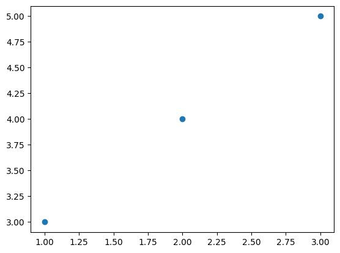
x = np.array([1,2,3,4,5])
y = x**2 - 2*x + 1
plt.plot(x,y,'o')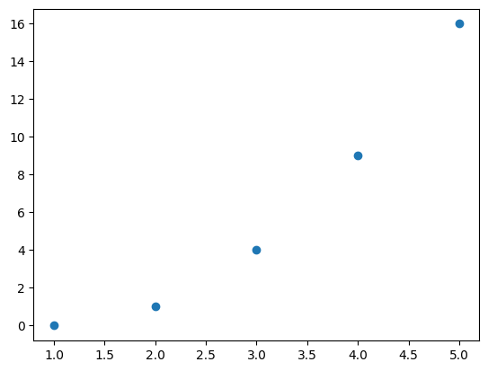
4. 2024 수능 – 1,2,4,6,23

(24)**(1/3) * 3**(2/3) #연습(2026.02.14.)6.0(풀이)
(24)**(1/3) * 3**(2/3)6.0
h=0.000001 #일단 0.1이라고 가정 > 점점 작은 수 대입해보기
def f(x):
return 2*x**3 - 5*x**2 + 3
(f(2+h)-f(2))/h4.000007002957773f(0)3f(1)0(풀이)
h = 0.0000001
def f(x):
return 2*x**3 - 5*x**2 + 3
(f(2+h)-f(2))/h4.000000721759989
a=1 # 대입해보기
3*2-a, 2**2+a(5, 5)(풀이)
a = 1
3*2-a, 2**2 + a(5, 5)
대입하지 않고 풀 수 있나? s4 = a1 + a2 + a3 + a4 s2 = a1 + a2 s4 - s2 = a3 + a4 3a4 = a3 + a4 2a4 = a3 r = 1/2
r = 1/2
((3/4)/r**4) + ((3/4)/r**3)18.0(풀이)
r = 0.5
an = np.array([(3/4)/(r**4),(3/4)/(r**3),(3/4)/(r**2),(3/4)/r,3/4])
Sn = np.cumsum(an)
Sn[3] - Sn[1], 3*an[3](np.float64(4.5), np.float64(4.5))anarray([12. , 6. , 3. , 1.5 , 0.75])12+618
x=0.001
np.log(1+3*x)/np.log(1+5*x)np.float64(0.6005983054313203)(풀이)
x = 0.0001
np.log(1+3*x)/np.log(1+5*x)np.float64(0.600059983005448)5. 2024 수능 - 3,7,24

#2026.2.14
#np.linspace(시작, 끝, 총 array 길이)
theta = np.linspace((3/2)*np.pi,2*np.pi,100)
plt.plot(theta,np.sin(-theta), label=r"$y=\sin(-\theta)$")
plt.plot(theta,np.sin(-theta)*0+1/3, '.', label=r"$y=\frac{1}{3}$")
plt.legend()
(풀이)
theta = np.linspace(3/2*np.pi, 2*np.pi, 100)
plt.plot(theta,np.sin(-theta),label=r"$y=\sin(-\theta)$")
plt.plot(theta,np.sin(-theta)*0+1/3,'.',label=r"$y=\frac{1}{3}$")
plt.legend()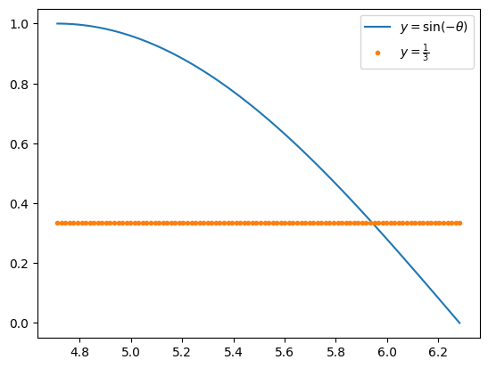
plt.plot(np.sin(-theta),label=r"$y=\sin(-\theta)$")
plt.plot(np.sin(-theta)*0+1/3,'.',label=r"$y=\frac{1}{3}$")
plt.legend()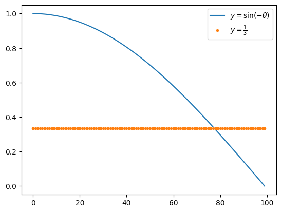
plt.plot(np.sin(-theta)[70:80],'o')
plt.plot(np.sin(-theta)[70:80]*0+1/3,'o')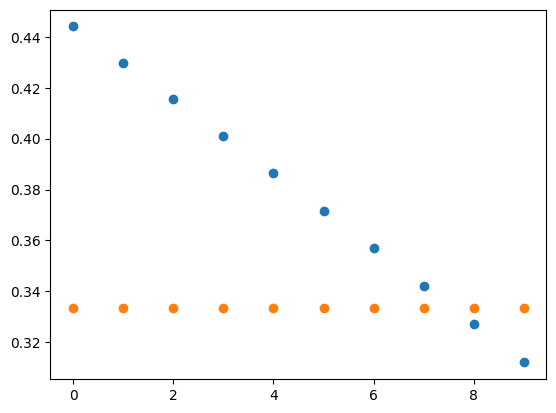
np.sin(-theta)[70:80] # 이중에서 0.33333... 에 가장 가까운것은 끝에서 두번째array([0.44406661, 0.42979491, 0.41541501, 0.40093054, 0.38634513, 0.37166246,
0.35688622, 0.34202014, 0.32706796, 0.31203345])np.sin(-theta)[78] # 이 값이 0.3333에 가장 가까움np.float64(0.32706796331742194)theta[78] # 이것이 theta 값np.float64(5.949986086344305)np.tan(5.949986086344305) # 이게 답이다np.float64(-0.34610336503441297)-np.sqrt(2)/2, -np.sqrt(2)/4, -1/4, 1/4, np.sqrt(2)/4 # 보기와 비교하면???(np.float64(-0.7071067811865476),
np.float64(-0.3535533905932738),
-0.25,
0.25,
np.float64(0.3535533905932738))
#2026.2.18.
#x=0
#def f(x):
# return (1/3)*x**3-2*x**2-12*x+4#함수를 다르게 선언해 보기
f = lambda x: (1/3)*x**3-2*x**2-12*x+4<연습> 1. x -> 2x g = lambda x: 2*x
- x -> (x-1)^2 g = lambda x: (x-1)**2
g = lambda x: (x-1)**2
g(3)4x = np.linspace(-5, 8, 101)
f(x)array([-27.66666667, -23.49423433, -19.554008 , -15.84159367, -12.35259733,
-9.082625 , -6.02728267, -3.18217633, -0.542912 , 1.89490433,
4.13566667, 6.183769 , 8.04360533, 9.71956967, 11.216056 ,
12.53745833, 13.68817067, 14.672587 , 15.49510133, 16.16010767,
16.672 , 17.03517233, 17.25401867, 17.332933 , 17.27630933,
17.08854167, 16.774024 , 16.33715033, 15.78231467, 15.113911 ,
14.33633333, 13.45397567, 12.471232 , 11.39249633, 10.22216267,
8.964625 , 7.62427733, 6.20551367, 4.712728 , 3.15031433,
1.52266667, -0.165821 , -1.91075467, -3.70774033, -5.552384 ,
-7.44029167, -9.36706933, -11.328323 , -13.31965867, -15.33668233,
-17.375 , -19.43021767, -21.49794133, -23.573777 , -25.65333067,
-27.73220833, -29.806016 , -31.87035967, -33.92084533, -35.953079 ,
-37.96266667, -39.94521433, -41.896328 , -43.81161367, -45.68667733,
-47.517125 , -49.29856267, -51.02659633, -52.696832 , -54.30487567,
-55.84633333, -57.316811 , -58.71191467, -60.02725033, -61.258424 ,
-62.40104167, -63.45070933, -64.403033 , -65.25361867, -65.99807233,
-66.632 , -67.15100767, -67.55070133, -67.826687 , -67.97457067,
-67.98995833, -67.868456 , -67.60566967, -67.19720533, -66.638669 ,
-65.92566667, -65.05380433, -64.018688 , -62.81592367, -61.44111733,
-59.889875 , -58.15780267, -56.24050633, -54.133592 , -51.83266567,
-49.33333333])#위 결과를 토대로 그래프를 그려보면
plt.plot(x,f(x),'o')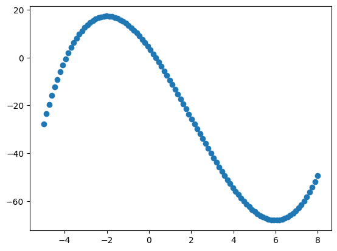
#최댓값 구하기
#arr = np.array([1,2,3,2,2])
#np.max(arr) -> 최대값을 구함
#np.argmax(arr) #최대값에서의 인덱스#np.max(f(x)) #최댓값
np.argmax(f(x)) #몇번째 인덱스인지np.int64(23)np.argmin(f(x))np.int64(85)x[85]-x[23]np.float64(8.06)#def f(x):
# return(1/3)*x**3-2*x**2-12*x+4
#f(0)# 위의 방식 말고 다른 방식으로 해보자.
f = lambda x: (1/3)*x**3-2*x**2-12*x+4x = np.linspace(-5,7,101)
plt.plot(x,f(x),'.')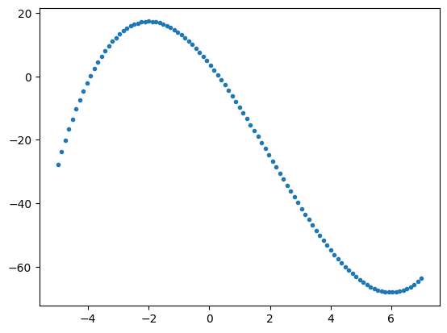
x = np.linspace(-5,7,101)
arr = np.array(f(x))
#np.max(arr), np.min(arr) # 최대, 최소 값 구하기
np.argmax(arr), np.argmin(arr) #그게 몇번째인지(np.int64(25), np.int64(92))x[92]-x[25]np.float64(8.04)#lamdba로 함수 만들기 연습
# g = lambda x: 2*x
# g(3)(풀이)
x=0
#def f(x):
# return (1/3)*x**3 - 2*x**2 -12*x +4
f = lambda x: (1/3)*x**3 - 2*x**2 -12*x +4x = np.linspace(-5,8,101)
plt.plot(x,f(x),'.')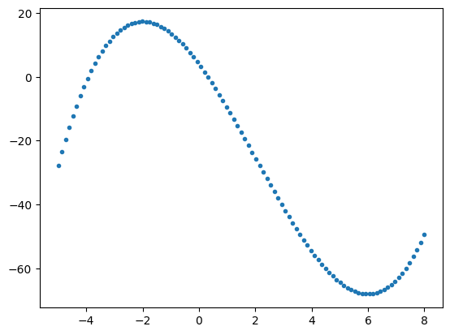
arr = np.array([1,2,33,-3,2,44])
np.argmax(arr)np.int64(5)np.argmax(f(x)), np.argmin(f(x))(np.int64(23), np.int64(85))x[85]- x[23]np.float64(8.06)
t = np.linspace(1/100, 1, 100)
x = np.log(t**3+1)
y = np.sin(np.pi*t)plt.plot(x,y,'.')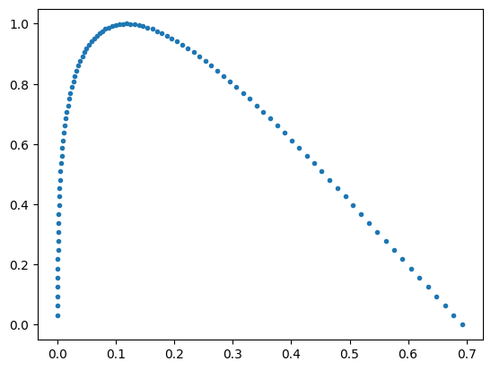
위 그래프에서 마지막 점 두개로 기울기를 구하면, 접선의 기울기값과 근사한 값을 구할 수 있을 것임
#마지막 점 구할때는 그 인덱스를 지정할 수 있지만, '-1' 등을 활용할 수 있음
x[-1], y[-1](np.float64(0.6931471805599453), np.float64(1.2246467991473532e-16))x[-2], y[-2](np.float64(0.6781853078827329), np.float64(0.031410759078128236))(y[-2]-y[-1]) / (x[-2]-x[-1])np.float64(-2.0993868719367015)(-1/3)*np.pi, (-2/3)*np.pi(-1.0471975511965976, -2.0943951023931953)(풀이)
t = np.linspace(1/100,1,100)
x = np.log(t**3+1)
y = np.sin(np.pi*t)plt.plot(x,y,'.')
x[-1],y[-1] # 마지막점(np.float64(0.6931471805599453), np.float64(1.2246467991473532e-16))x[-2],y[-2] # 마지막에서 두번째점(np.float64(0.6781853078827329), np.float64(0.031410759078128236))(y[-2]-y[-1])/(x[-2]-x[-1])np.float64(-2.0993868719367015)-1/3*np.pi, -2/3*np.pi, -np.pi, - 4/3*np.pi, -5/3*np.pi # 따라서 답은 2번(-1.0471975511965976,
-2.0943951023931953,
-3.141592653589793,
-4.1887902047863905,
-5.235987755982989)6. 파이썬 문법복습
A. 함수를 선언하는 두 가지 방법
- 방법1: def를 이용하는 방법
def f(x):
return x+1f(3)4- 방법2: lambda를 사용하는 방법
f = lambda x: x+1f(3)4B. list와 np.array의 차이점
- 리스트는 수학친화적이지 않다.
lst1 = [1,2,3]
lst2 = [-1, -2, -3]lst1+lst2[1, 2, 3, -1, -2, -3]- 넘파이는 수학친화적이다.
arr1 = np.array([1,2,3])
arr2 = np.array([-1, -2, -3])arr1+arr2array([0, 0, 0])C. 인덱스로 벡터의 원소를 뽑는 방법
이 방법은 list일 때나 numpy(np.array)에서나 똑같이 동작함
x = [11,22,33,-22,-33,-44]- 첫번째 원소를 뽑고 싶다면?
x[0]11- 두번째 원소를 뽑고 싶다면?
x[1]22- 마지막 원소를 뽑고 싶다면?
x[5]-44x[-1]-44- 마지막에서 두번째 원소를 뽑고 싶다면?
x[4]-33x[-2]-33- index = 0,1,2 에 해당하는 원소만 추출
x[0:3] # 마지막 인덱스 3은 포함되지 않음[11, 22, 33]- index = 2,3,4 에 해당하는 원소만 추출
x[2:5] # 2,3,4에 해당하는 인덱스만 추출[33, -22, -33]- x[0:3]와 같이 처음 시작점이 0인 경우 생략가능
x[:3][11, 22, 33]- x[k:]와 같은 코드는 index=k에서 끝까지 뽑는다는 의미이다.
x[3:6] #3,4,5[-22, -33, -44]x[3:][-22, -33, -44]D. np.cumsum(), np.cumprod()
- 누적합
arr = np.array([1,-1,1,-1,1,-1])
arrarray([ 1, -1, 1, -1, 1, -1])np.cumsum(arr)array([1, 0, 1, 0, 1, 0])- 누적곱
arr = np.array([1,2,3,4])
arrarray([1, 2, 3, 4])np.cumprod(arr)array([ 1, 2, 6, 24])E. plt.plot()
- 예시1: \(x\)없이 그리기 (라인)
y=[2,3,5,2]
plt.plot(y)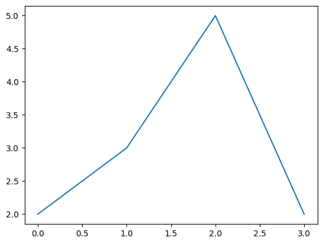
- 예시2: \(x\)없이 그리기 (점)
y=[2,3,5,2]
plt.plot(y,'o')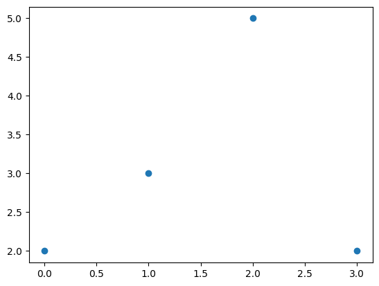
- 예시3: \((x,y)\)를 전달하여 그리기(점)
x=[20,21,22,23]
y=[2,3,5,2]
plt.plot(x,y,'o')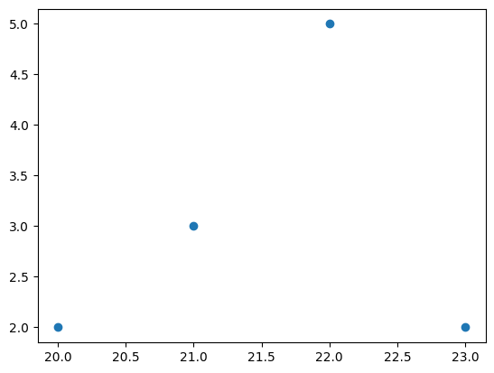
- 예시4: 겹쳐서 그리기
x=[20,21,22,23]
y1=[2,3,5,-2]
y2=[2.5 ,3.5 ,5.5 , -2.5]
plt.plot(x,y1,'--o')
plt.plot(x,y2,'--o')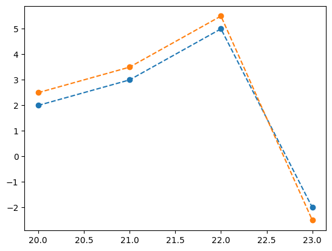
- 예시5: 겹쳐서 그리기 + 라벨
x=[20,21,22,23]
y1=[2,3,5,-2]
y2=[2.5 ,3.5 ,5.5 , -2.5]
plt.plot(x,y1,'--o',label="y1")
plt.plot(x,y2,'--o',label="y2")
plt.legend()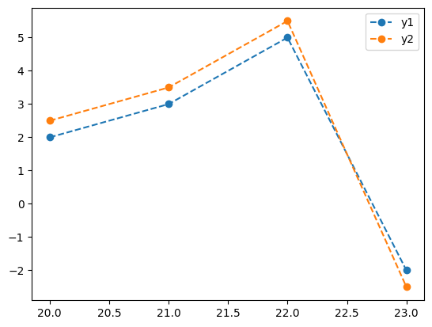
- 예시5: 겹쳐서 그리기 + latex 라벨
x=[20,21,22,23]
y1=[2,3,5,-2]
y2=[2.5 ,3.5 ,5.5 , -2.5]
plt.plot(x,y1,'--o',label=r"$y_1$")
plt.plot(x,y2,'--o',label=r"$y_2$")
plt.legend()- latex수식은 이 수업에서 필수사항은 아님
- latex수식을 사용할 수 없어도 시험점수를 획득할때 아무런 불이익이 없음.
F. np.argmax, np.argmin
- 예시1
arr = np.array([1,2,3,2,1,0])
arrarray([1, 2, 3, 2, 1, 0])np.argmax(arr),np.argmin(arr)(np.int64(2), np.int64(5))# 예제 – 두 함수의 교점
\(-1 \leq x \leq 3\) 에서
- \(f(x)=(x-1)^2\) 와
- \(g(x)=-2x+5\)
의 교점의 좌표를 구하여라.
x = np.linspace(1.8,2.2,101)
f = (x-1)**2
g = -2*x+5
plt.plot(x,f,'.')
plt.plot(x,g,'.')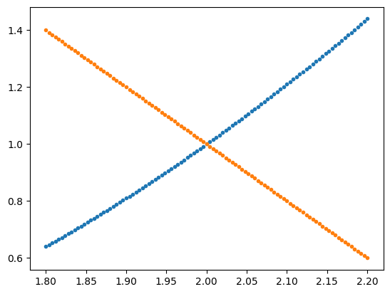
(풀이)
x = np.linspace(-1,3,101)
f = (x-1)**2
g = -2*x+5
plt.plot(x,f,label=r"$f(x)=(x-1)^2$")
plt.plot(x,g,label=r"$g(x)=-2x+5$")
plt.legend()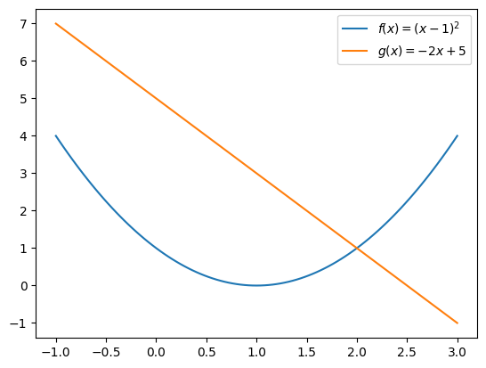
x[np.argmin(abs(f-g))]np.float64(2.0)2,(2-1)**2(2, 1)- 이것이 교점의 좌표
7. 숙제
- \(x=3\)일때
\[\frac{e^x}{1+e^x}\]
값을 계산하는 코드를 작성하고 LMS에 제출하라.
.ipynb파일형태로 LMS에 제출할 것. (Quiz제출 연습용임. 제출방법이 익숙하지 않은 학생은 꼭 질문할것. 이 숙제는 제출하지 않아도 감점없음)
x=0
f = np.exp(x)/(1+np.exp(x))
fnp.float64(0.5)